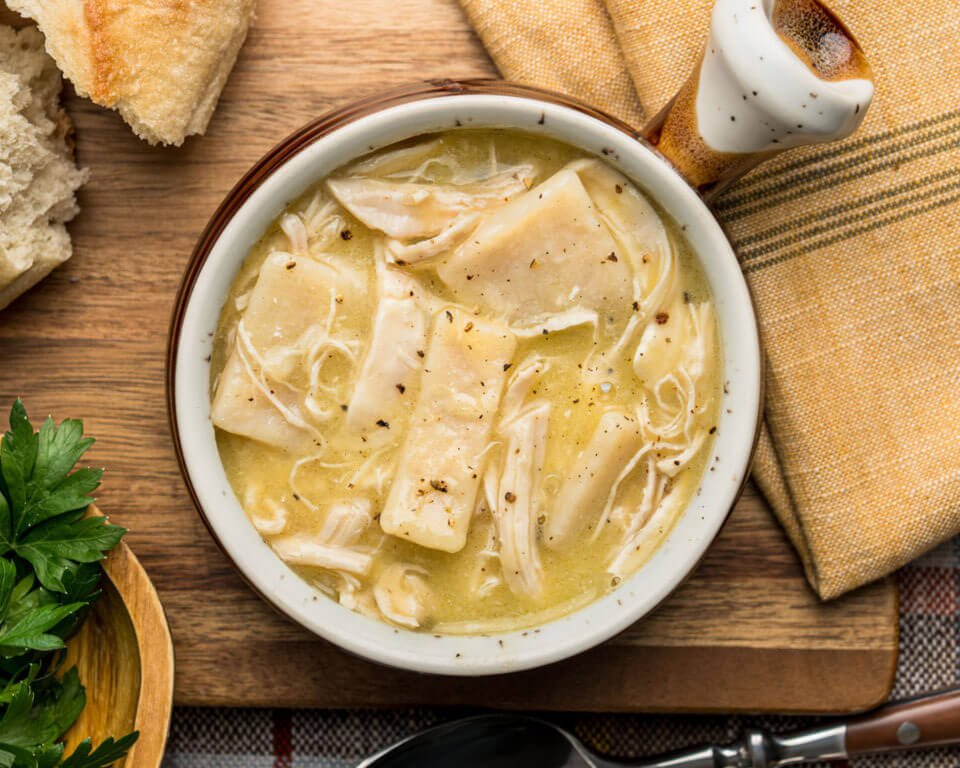

RECIPE CATEGORY: DINNER
Chicken & Dumplings
A cozy, comforting chicken and dumplings dish with tender chicken, savory broth, and fluffy dumplings.

Ingredients
Servings: 6
Instructions
- Add water (about 12-14 cups) to a large stock pot, generously salt and bring to a boil over high heat on the stove top. Add chicken breasts and allow to cook until fully done. (They usually float when done.) Remove breasts from broth/water to set aside and cool. Turn heat down to medium-low and keep broth at a low boil on the stove top.
- Add butter, cream of chicken soup and a generous amount of cracked black pepper to the boiling chicken broth and let melt while moving onto the next steps.
- In a medium bowl, stir together flour and salt. Make a little well in the flour and add the oil and egg. Mix together using a fork. Dough should be loose (or shaggy) but form a ball when pressed together. Add 1-2 tablespoon water if dough is too dry.
- Turn your dough ball out onto a well floured surface. Tear off about ⅓ of the dough and, using a floured rolling pin, roll out to ¼ inch thickness or thinner.
- Cut dough into approximately 1 inch squares (using a butter knife or pizza cutter).
- Toss the squares in the extra flour from the floured surface. This will keep the dumplings from dissolving or sticking together as they cook and thicken your boiling broth at the same time.Add them a few a time + the flour from the floured surface to the broth. Re-flour your surface and repeat until all of the dough has been used.
- Shred cooled chicken breasts and add.
- As dumplings begin to cook and soak up the broth, they will sink to the bottom. So stir frequently but gently. When dumplings turn white and begin to float, they are done. This usually takes about 20-30 minutes.
- Add more pepper as desired. Serve.
Recipe notes
- Use a pot larger than you think you might need so there is plenty of room for the dumplings to move around while boiling. If they don’t have plenty of room to move, they will clump together.
- Begin making your dumplings when you put the ckicken on the boil.This kind of multi-tasking can save time.
- If your dumplings are gummy, still taste like flour, or aren’t soft and light, then they haven’t simmered long enough. Just be patient and let them simmer a bit longer.
- Remember to toss the dumplings in flour + add the flour from your floured surface every time you cut and add dumplings to the pot. This is what thickens your recipe.